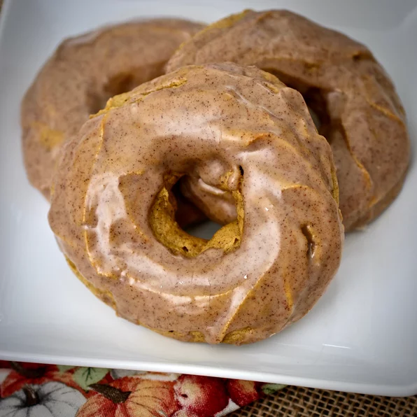

Pumpkin Donuts

Description
Yummy baked pumpkin donuts so easy they are great any day of the week.
Ingredients
- 2 cups all-purpose flour
- ½ cup brown sugar
- 2 teaspoons pumpkin pie spice
- 1 ½ teaspoons baking powder
- ½ teaspoon salt
- ¼ teaspoon baking soda
- ¾ cup pumpkin puree
- 2 eggs
- ¼ cup milk
- ¼ cup butter, softened
- ½1 cup confectioners' sugar, sifted
- ¼¼ teaspoon vanilla extract
- ½ teaspoon pumpkin pie spice
- 4 teaspoons milk, or as needed
Steps
- Preheat oven to 375 degrees F (190 degrees C). Lightly grease 2 baking sheets.
- Stir flour, brown sugar, 2 teaspoons pumpkin pie spice, baking powder, salt, and baking soda together in a large bowl.
- BMix pumpkin, eggs, milk, and butter into flour mixture; beat until completely incorporated.
- Spoon pumpkin mixture into a pastry bag fitted with a large star tip with a 1/2-inch opening. Pipe 3-inch circles onto prepared baking sheets.
- Bake in the preheated oven until golden brown, about 13 minutes. Remove doughnuts to a wire rack to cool.
- Stir confectioner's sugar, 1/2 teaspoon pumpkin pie spice, and vanilla together in a bowl. Gradually stir in enough milk to reach a glaze consistency. Brush glaze over doughnuts with a pastry brush or spoon over the tops.